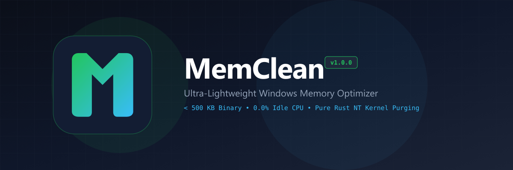
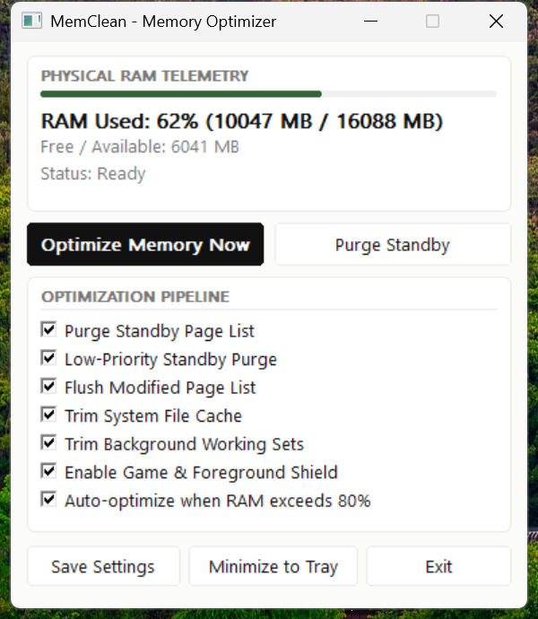
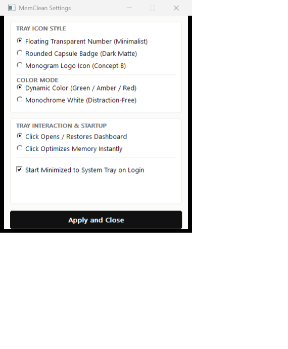
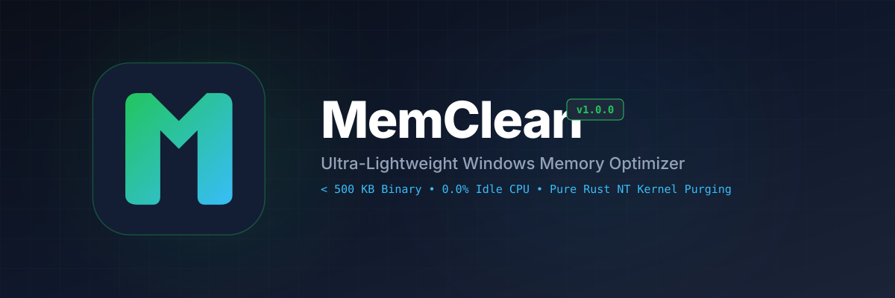

UI Gallery
Screenshots
Native Win32 GDI interface — light theme, Segoe UI, hairline borders, rounded cards. No Electron, no WebView.




Note: Screenshots show the native Win32/GDI UI rendered at native resolution. Colors and layout match the actual application — light theme, Segoe UI fonts, hairline borders, rounded cards.